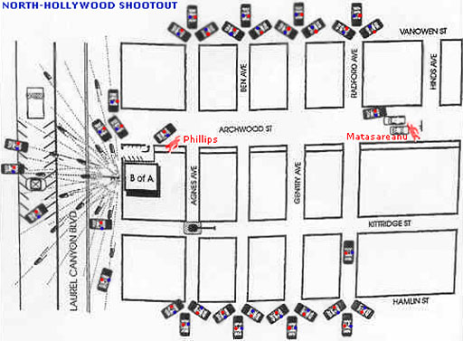

Police body armour and less-lethal weapons such as pepper spray, tear gas, batons, and police service dogs often enable police officers to apprehend aggressive or violent suspects without resorting to firearms. Soft body armour is worn routinely by police officers as a precaution in case an armed suspect shoots at them.
Concealable soft body armour has saved hundreds of officers’ lives since it was developed for general duty use in the early 1970s. However, suspected criminals sometimes use it during the commission of crimes. The infamous 1997 North Hollywood Shootout, involving two heavily armed men and hundreds of officers from the Los Angeles Police Department (LAPD), is an example of the effectiveness of soft body armour and the limitations of less-lethal weapons in dynamic situations involving firearms. Although only the suspects were killed in this incident, the high number of injuries made this one of the bloodiest cases of violent crime in the 1990s and one of the most dramatic bank robberies of the 20th century.
The bank robbers were Larry Phillips Jr. and Emil Matasareanu. They were both bodybuilders. Phillips was a 26-year-old unsuccessful real estate salesman with a wife and two children. Matasareanu, an unsuccessful software designer, was raised by his mother who operated a home for several mentally-ill patients. As a result of a blow from one of the patients, Matasareanu suffered from a brain abnormality called epilepsy. Strangely, Matasareanu had brain surgery only a few weeks prior to the North Hollywood Shootout.
The two men had robbed several banks of over $1.6 million in total. Their first three robberies involved stealing cash from armoured cars, and their last two robberies involved holding up banks.
On February 28, 1997, shortly after 9:00 a.m., Larry Phillips Jr. and Emil Matasareanu entered a Bank of America in North Hollywood Los Angeles, California. Phillips was actually covered head-to-toe with soft body armour and bulky clothing as he entered the bank. He had two halves of one bullet-resistant vest wrapped around his legs, four more halves around his thighs and arms, and one vest on his torso. The bullets-resistant vests were not cut up and sewn together because cutting Kevlar breaks the outer seal, which causes it to fray and lose most of its protective quality. The vests were simply held together with the velcro straps that were already on the vests. Emil Matasareanu wore a single bullet-resistant vest with a trauma plate over his torso; he had not covered his arms and legs.
Both suspects were armed with high-powered assault rifles. Before entering the bank, both robbers took some phenobarbitol, a barbiturate prescribed as a anti-seizure medication. The medication likely belonged to Matasareanu for his epileptic seizures. It is thought that both suspects took this drug for its physically calming side-effects.
Thirty-two customers and ten employees were in the bank at the time of the robbery. One customer was injured when he was hit in the head with the end of one suspect’s rifle. An individual walking past the bank saw the robbers enter the bank and flagged down an LAPD patrol car.
When the robbers entered the bank, one discharged a full 30-round magazine into the ceiling. The suspects then split up. Phillips kept watch in the lobby while Matasareanu forced the bank manager to open the vault. The bank manager placed US$303 305 in a suitcase, but Phillips and Matasareanu were expecting more. Unknown to them, their previous robberies had led the banks in the area to change their armoured car delivery times to make them less predictable. The bank Phillips and Matasareanu had chosen to rob had not yet received any money from their armoured car delivery service.
When Matasareanu was told that no more money was in the vault, he demanded the manager open the Automated Teller Machines (ATM). However, nobody on-site had access to the ATMs. This infuriated Matasareanu, causing him to try to shoot open the ATM access point. The shots broke the lock, making opening the ATM impossible. Frustrated, the robbers decided to leave with what money they had. They locked all the customers and employees in the bank vault. Larry Phillips left through the north door of the bank, and Matasareanu went through the south door a few seconds later.
Approximately 20 minutes after entry, both suspects exited the bank. They were met by several LAPD police officers armed with handguns as well as a few pump-action shotguns.
Standing in the doorway of the bank, Phillips began spraying at police officers positioned on the north side of the bank. Both gunmen used armour-piercing cartridges in their rifles, capable of penetrating cars, walls, and the soft body armour.
A rookie police officer taking cover behind a kiosk across the street from the bank fired at Phillips when his back was turned. The officer stuck him in the back with nine buckshot pellets (as determined later). However, because of his body armour, Phillips was left unscathed. Phillips fired back at the officers behind the kiosk, hitting the rookie officer twice in his lower back and buttocks and another detective in the ankle. The two wounded officers entered a dentist’s office nearby where the staff treated their injuries.
Meanwhile, Matasareanu had the suitcase of money with him. Three dye packs that had been slipped into the suitcase containing the cash caused a red smoke to begin spewing out. Because the dye destroys the money, Matasareanu abandoned the suitcase and angrily began firing from the south side of the bank. About fifteen minutes into the shootout, Matasareanu received a gunshot wound to his leg. He jumped into a getaway car. As he drove the car, he continued to fire shots through the car's windows.
Phillips continued to fire at officers as he walked toward the north side of the bank. Several officers and detectives fired at Phillips from behind a cement wall at the rear of the bank. Phillips fired back as he calmly walked towards the getaway car. A round from one of the officers behind the wall hit Phillips in the chest, nearly knocking him over. However, his body armour saved him again. At the getaway car, Phillips threw his AK-47 rifle inside and got out a new weapon, an illegally converted automatic HK-91 rifle.
Before he got into the car, Phillips fired randomly at officers just across the street. Officers continued to return fire, and one round hit Phillips’ hand. This hit seemed to distract Phillips from getting into the getaway car. He walked away and continued shooting wildly from behind nearby cars. Phillips even began shooting at news helicopters filming the shootout.
Matasareanu began backing the car out of the parking lot. Phillips hurried to him, firing as he went. As he approached the trunk of the car, a round struck his shoulder, immobilizing the upper left side of his body. Despite this, Phillips continued to shoot his rifle with one-hand. He threw his HK-91 into the trunk and pulled out a Norinco Chinese Type 56 Assault Rifle.
As he tried to load his new weapon, Matasareanu opened the passenger side door. However, Phillips shut the door and began walking beside the car in an apparent attempt to provide cover fire for his partner. The car with Phillips walking beside moved away from the bank to the edge of the parking lot. Phillips ducked behind a tractor trailer on a street near the bank and began firing aggressively again. This allowed Matasareanu to drive past him to the end of the street.
Phillips continued to shoot at officers as he moved. However, his rifle jammed. He then dropped the rifle and pulled a handgun from his jacket. He fired several rounds, but he dropped the handgun after he was shot in the right hand. Phillips then picked up the handgun and shot himself in the throat, dying instantly. It is unclear whether this was deliberate or accidental. A nearby officer thought that Phillips killed himself accidentally as he tried to reload his pistol one-handed.
Matasareanu was further up the street and likely did not know his partner was dead. Police had shot out the tires of his car, so he tried unsuccessfully to car-jack several vehicles. Matasareanu fired in the general direction of a pickup truck, and the driver fled. However, the driver had disabled the vehicle by shutting off the gas tank pumps. Before Matasareanu limped to the truck, he pulled out a new weapon, an AR-15 rifle equipped with a 100-round magazine. Three LAPD Metro SWAT officers drove towards him, intending to help some wounded officers. Matasareanu fired several rounds at the officers before getting into the truck. He tried to start it, but he soon exited the vehicle. He then ran behind the hood of his car and began firing wildly again. The three SWAT officers took cover behind their car and fired at Matasareanu's unprotected feet and legs. Other police officers began firing from the side streets and nearby houses. Finally, after being shot 29 times, Matasareanu collapsed and fell against the hood of his getaway car. When the SWAT moved in to arrest the gunman, he was still alive and yelling obscenities at them.
Approximately 370 LAPD officers were involved in the 40-minute shootout and the investigation afterwards. Twelve police officers, eight civilians, and one civilian dog were wounded. Miraculously, only two people were severely wounded, and they survived their injuries. Larry Phillips was shot 11 times and Matasareanu was shot 29 times. Their Kevlar body armour prevented many of the handgun bullets and shotgun pellets from incapacitating them. As a result, the two men were able to fire hundreds of rounds of high-powered ammunition in their desperate attempt to escape.
Subsequent police investigations into this incident revealed that the LAPD officers were at a significant disadvantage due to a lack of firepower. The multiple layers of body armour worn by Phillips and Matasareanu enabled them to sustain multiple hits from police pistol bullets without being immediately incapacitated.
Other less-lethal weapons available at the time, such as tear gas and pepper spray, were not practical due to the dynamic nature of the threat. Had the suspects barricaded themselves in a house, the police could have set up a perimeter and eventually used tear gas to help in their apprehension. Because both suspects were continuously moving and firing automatic weapons throughout the neighbourhood as they attempted to escape, police officers were forced to return fire with their service pistols and shotguns. Tear gas or pepper spray would have had no effect.
The family of Emil Matasareanu sued the LAPD for wrongful death because of the LAPD's refusal to allow the ambulances to the scene to treat him. The LAPD stated that ambulance personnel were following standard procedure in hostile situations by not entering "the hot zone" because there were reports of other possible suspects in the area. After a hung jury in the first trial, the Matasareanu family dropped the suit.